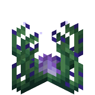

Welcome to the Assorted Discoveries Wiki
Please report issues at: Assorted Discoveries Issues
🚧 Wiki Under Development: This wiki is currently under active development. Many pages are missing or incomplete. Thank you for your patience as we continue to document all features!
Search By Category

